Conheça a discografia da famosa banda britânica "The Cure" em ordem cronológica!
ÁLBUNS
1979 - Three Imaginary Boys
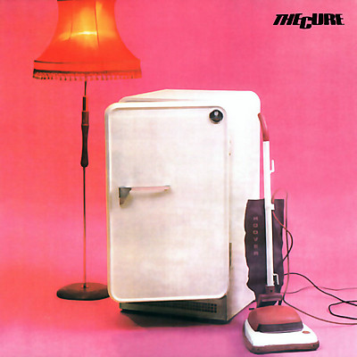
É o álbum de estreia da banda inglesa de rock, lançado em 8 de maio de 1979 pela Fiction Records. Mais tarde, foi lançado nos Estados Unidos, Canadá e Austrália com uma lista de faixas diferente, como um álbum de compilação intitulado Boys Don't Cry. A formação era composta por Robert Smith na guitarra e no vocal, Laurence Tolhurst na bateria e Michael Dempsey no baixo. O disco contém treze faixas.
1980 - Seventeen Seconds
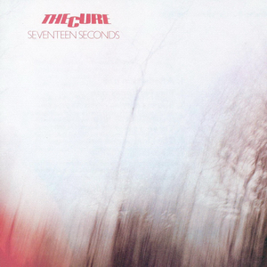
Seventeen Seconds é o segundo álbum de estúdio da banda inglesa de rock, lançado em 22 de abril de 1980 pela Fiction Records. O álbum marcou a primeira vez que o vocalista Robert Smith co-produziu com Mike Hedges. Após a saída do baixista original Michael Dempsey, Simon Gallup tornou-se um membro oficial junto com o tecladista Matthieu Hartley. O single "A Forest" foi a primeira entrada da banda no top 40 do UK Singles Chart.
1981 - Faith
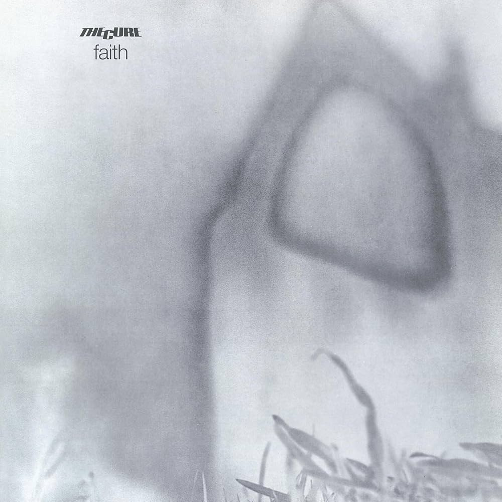
Faith é o terceiro álbum de estúdio da banda inglesa de rock, lançado em 14 de abril de 1981 pela Fiction Records. Precedido pelo single "Primary", Faith fez sucesso no Reino Unido, atingindo e permanecendo na 14ª posição por 8 semanas. Mesmo tendo feito sucesso, Faith foi, por outro lado, a obstinação da banda em seguir uma atmosfera nebulosa e fúnebre, mas de forma mais acentuada em relação ao álbum anterior, Seventeen Seconds.
1982 - Pornography
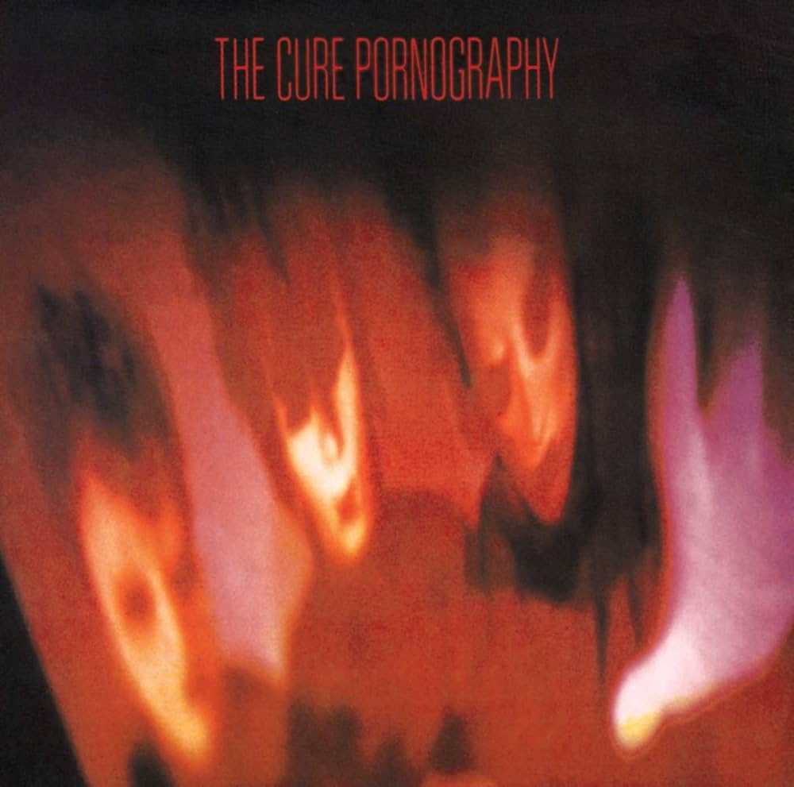
Pornography é o quarto álbum de estúdio da banda inglesa de rock, lançado em 4 de maio de 1982 pela Fiction. Precedido pelo single "Charlotte Sometimes" no ano anterior, Pornography foi o primeiro álbum da banda com um novo produtor, Phil Thornalley, e foi gravado nos estúdios RAK entre janeiro e abril. Durante as sessões de gravação a banda esteve à beira do colapso com o consumo de álcool e o uso de drogas alucinógenas, divergências entre os seus membros e a depressão do vocalista Robert Smith que alimentou a atmosfera densa e o conteúdo lírico do álbum. Este álbum marca o ápice do período gótico do grupo, que tinha começado com Seventeen Seconds em 1980.
1984 - The Top
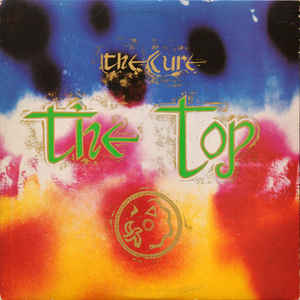
The Top é o quinto álbum de estúdio da banda inglesa, lançado em 30 de abril de 1984 pela Fiction Records. O álbum entrou no UK Albums Chart no número dez em 12 de maio. Logo após seu lançamento, a banda embarcou em uma grande turnê pelo Reino Unido, culminando em uma residência de três noites no Hammersmith Odeon em Londres.
1985 - The Head On The Door
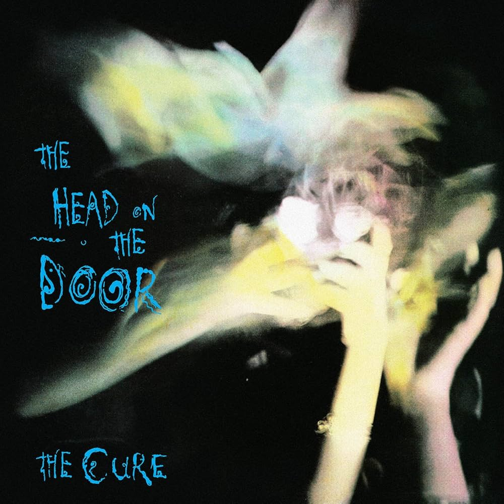
É o sexto álbum de estúdio da banda inglesa, lançado em 26 de agosto de 1985 pela Fiction Records. Precedido pelo single "In Between Days", que alcançou a 15ª posição no UK Singles Chart, The Head on the Door foi descrito pela Melody Maker como "uma coleção de canções pop". Com sua variedade de estilos, o álbum permitiu que o grupo alcançasse um público mais amplo tanto na Europa quanto na América do Norte. O álbum é o primeiro a apresentar o baterista Boris Williams. O baixista Simon Gallup, que já havia trabalhado em três grandes álbuns do Cure no início dos anos 80, foi chamado de volta antes da gravação. Em 1985 a banda se tornou um quinteto com o instrumentista Porl Thompson como seu quinto membro oficial.
1987 - Kiss Me, Kiss Me, Kiss Me
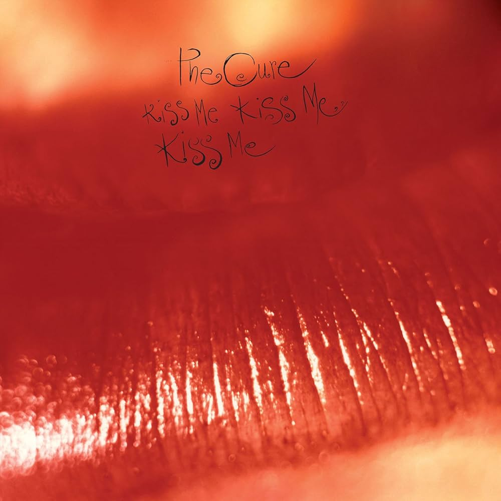
É o sétimo álbum de estúdio da banda inglesa de rock The Cure, lançado em maio de 1987 pela gravadora Fiction Records. Foi um grande sucesso internacional, assim como seu antecessor, The Head on the Door, alcançando o top 10 em vários países. Em 2000, o álbum foi votado como 256 no All Time Top 1000 Albums de Colin Larkin.
1989 - Disintegration
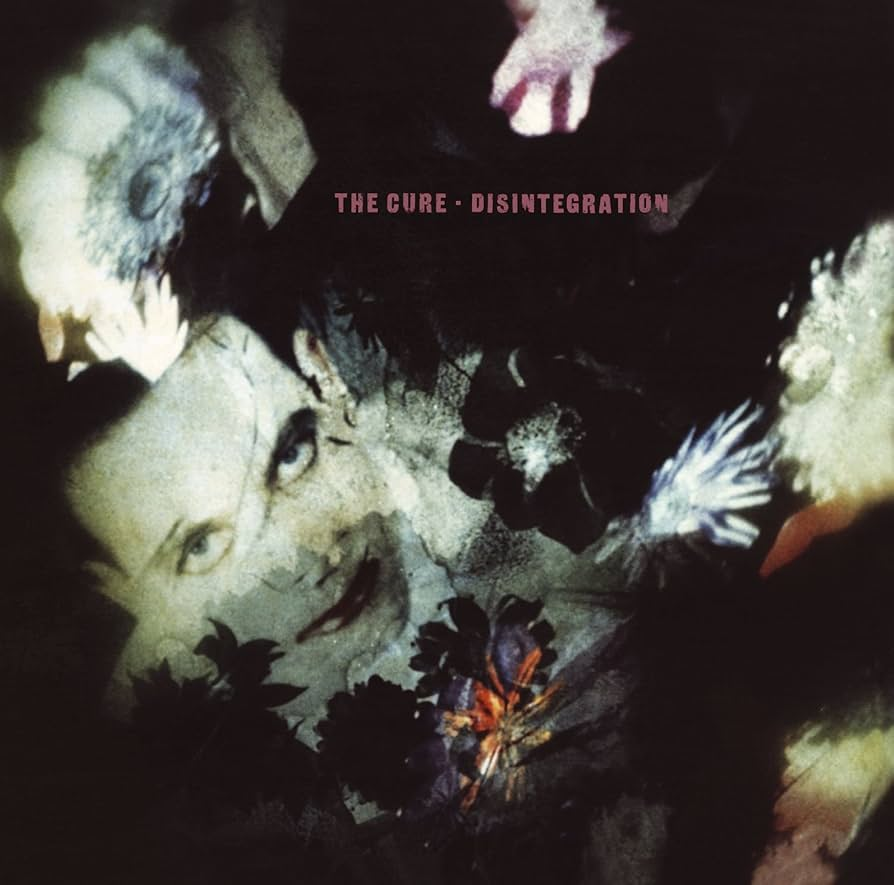
É o oitavo álbum de estúdio da banda inglesa, lançado em 2 de maio de 1989 pela Fiction Records. Foram extraídos quatro singles: "Lullaby", "Fascination Street", "Lovesong" e "Pictures of You". O disco marca um retorno ao estilo melancólico do rock gótico que a banda havia estabelecido no início da década de 1980, tanto pela temática como pela composição e letras. Apesar de seu posterior sucesso comercial, à gravadora norte-americana da banda até o momento, Elektra Records, considerou a Robert Smith nas primeiras mixagens do álbum que estava fazendo o seu "suicídio comercial."
1992 - Wish
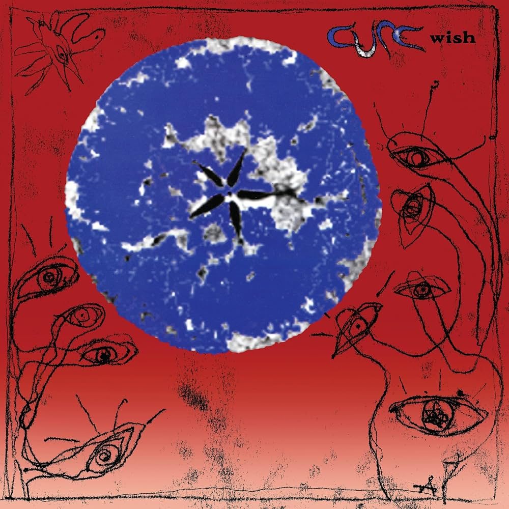
Nono álbum de estúdio do The Cure e o mais bem-sucedido comercialmente da banda. Wish equilibra o som melancólico e etéreo que marcou a fase anterior (Disintegration) com um lado mais leve e pop. O disco passeia entre a euforia de “Friday I’m in Love” e a dor contida em faixas como “Trust” e “From the Edge of the Deep Green Sea”. Marca o auge do sucesso mundial da banda nos anos 90 e foi também a última gravação com o guitarrista Porl Thompson até seu retorno em 2005.
1996 - Wild Mood Swings
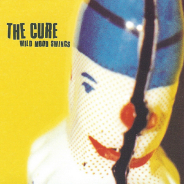
Décimo álbum de estúdio. Como o nome já indica, é um disco com variações intensas de humor e estilo. Tem momentos de energia vibrante, como “Mint Car”, faixas estranhas e experimentais como “The 13th”, e outras bastante sombrias e densas como “Want” e “Bare”. Foi recebido de forma dividida pela crítica e pelos fãs, em parte pelo contraste com o tom coeso e introspectivo de Wish. Ainda assim, é um disco ousado e cheio de personalidade.
2000 - Bloodflowers
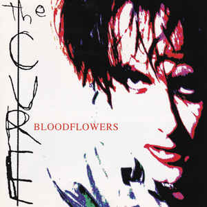
Décimo primeiro álbum, e um retorno ao clima introspectivo e atmosférico do The Cure dos anos 80. Robert Smith chegou a dizer que esse álbum, junto com Pornography (1982) e Disintegration (1989), forma uma trilogia emocional. As músicas são longas, contemplativas e existencialistas, com foco em temas como o tempo, perda e envelhecimento. Sem singles promocionais, Bloodflowers é um trabalho maduro, denso e emocionalmente carregado, muito querido entre os fãs mais antigos.
2004 - The Cure
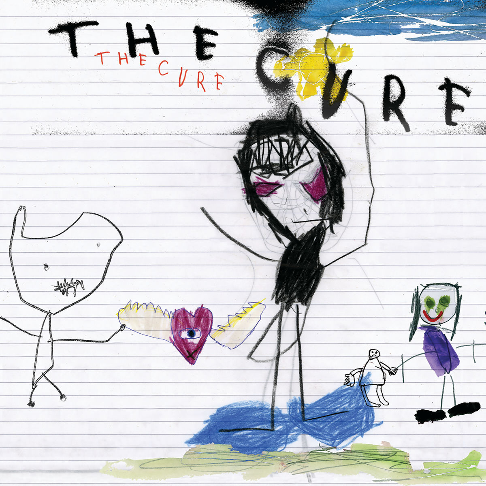
Décimo segundo álbum, produzido por Ross Robinson (mais conhecido por trabalhar com bandas de nu metal como Korn e Slipknot). Essa escolha resultou num som mais cru, direto e intenso, mas ainda fiel à estética da banda. O álbum mistura agressividade com sensibilidade, trazendo faixas como “The End of the World”, “Before Three” e “Anniversary”. Foi o primeiro álbum do The Cure lançado sob um grande contrato com a Geffen Records, marcando uma nova fase na carreira da banda.
2008 - 4:13 Dream
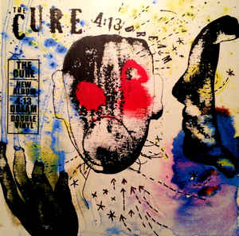
Décimo terceiro álbum de estúdio. Originalmente planejado como um disco duplo, acabou sendo lançado com apenas uma parte das músicas, o que fez muitos fãs sentirem que o disco ficou incompleto. Mesmo assim, 4:13 Dream traz uma mistura interessante de luz e escuridão, com letras existencialistas embaladas por uma sonoridade mais pop. Destaques incluem “Underneath the Stars” (uma faixa etérea e dramática), “The Only One” e “Sleep When I'm Dead”. É, até hoje, o último álbum de estúdio lançado pela banda.
2024 - Songs of a Lost World
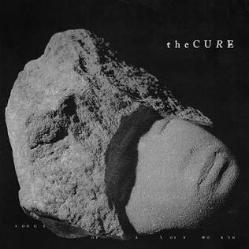
É o décimo quarto álbum de estúdio da banda britânica, lançado em 1 de novembro de 2024 por Fiction, Lost Music, Universal,Polydor e Capitol Records. É o primeiro lançamento de material novo da banda em 16 anos, desde o lançamento de 4:13 Dream em 2008. Todas as canções foram compostas exclusivamente pelo vocalista/guitarrista Robert Smith, a primeira vez que isso aconteceu desde o álbum The Head on the Door, de 1985. É também o primeiro álbum de estúdio com o guitarrista Reeves Gabrels. Foi lançado um dia depois do Halloween, a pedido de Smith.
COMPILAÇÕES
1980 - Boys Don't Cry
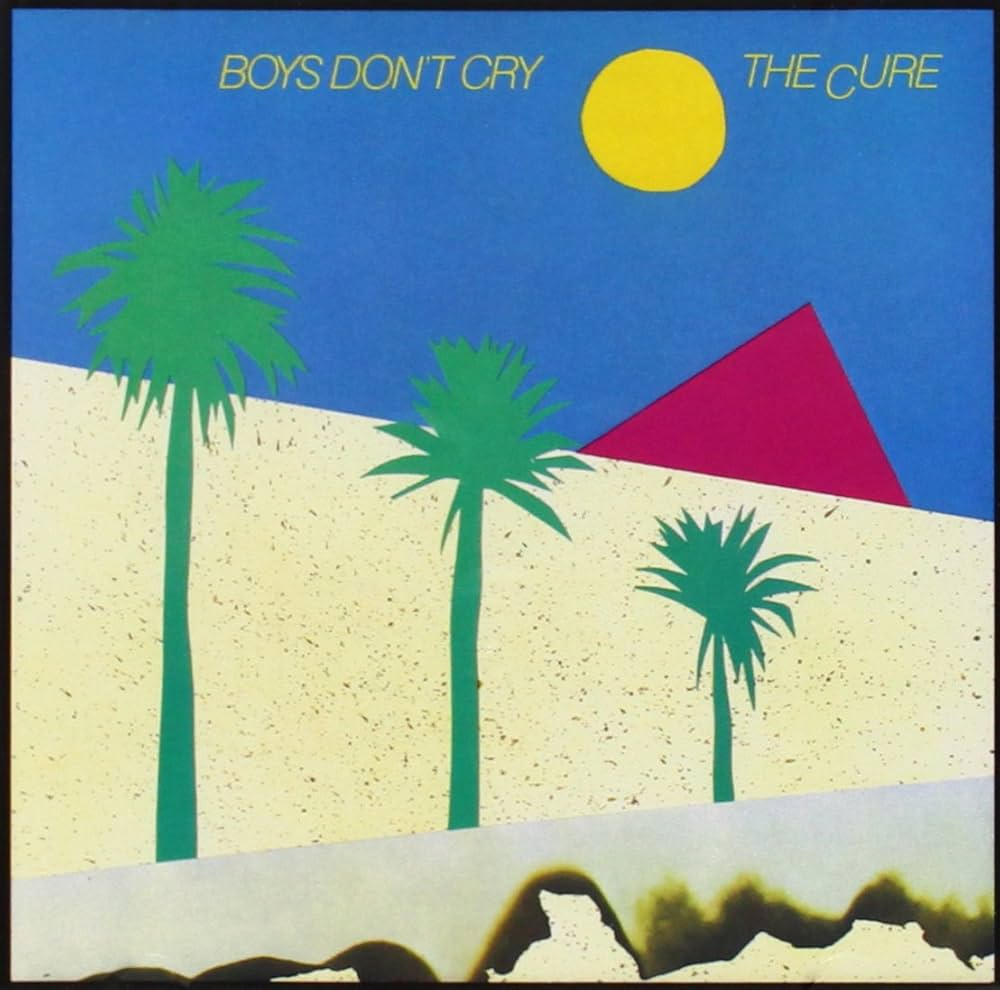
Primeira coletânea da banda, lançada para o mercado internacional como uma versão alternativa do álbum Three Imaginary Boys, incluindo a faixa icônica “Boys Don’t Cry”.
1981 - Happily Ever After
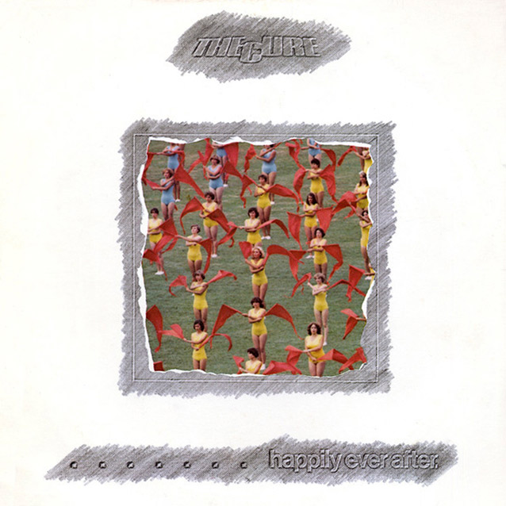
Segunda coletânea, exclusiva para o mercado norte-americano. Junta os álbuns Seventeen Seconds e Faith num só, oferecendo um mergulho no início sombrio do The Cure.
1983 - Japanese Whispers
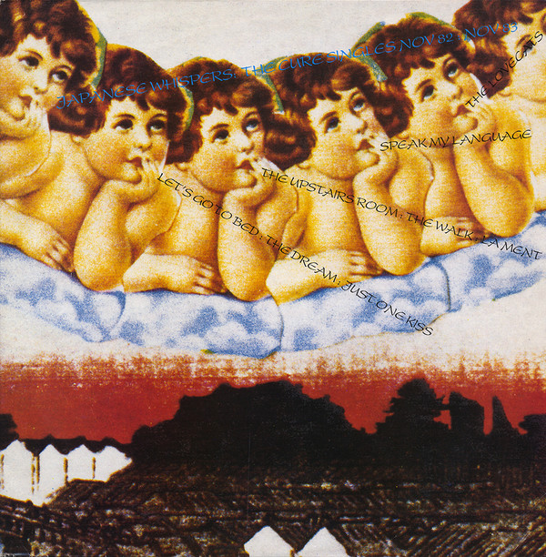
É a terceira coletânea musical da banda inglesa de rock. Foi lançado no final de 1983 pela Fiction Records. Inclui os singles "Let's Go to Bed", "The Walk" e "The Lovecats". As outras faixas são os lados B desses singles, embora "Mr. Pink Eyes" (o segundo lado B de "The Lovecats") não tenha sido incluído. As músicas foram gravadas quando a banda estava em fase de transição depois que o baixista Simon Gallup saiu após uma turnê para promover o álbum anterior, Pornography. Começando com esses singles, Lol Tolhurst mudou da bateria para os teclados, papel que manteve até sua saída em 1989.
1986 - Standing on a Beach/Staring at the Sea
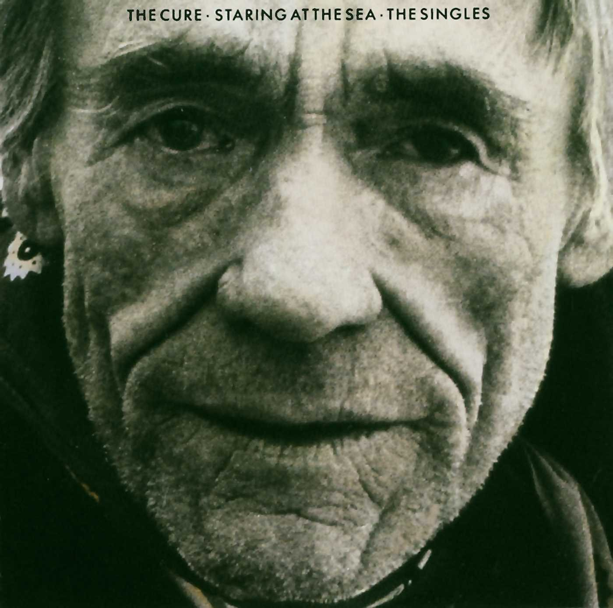
Quarta coletânea, é uma compilação dos singles de 1978 a 1986. Um dos lançamentos mais famosos da banda, com versões diferentes em CD, vinil e cassete.
1990 - Mixed Up
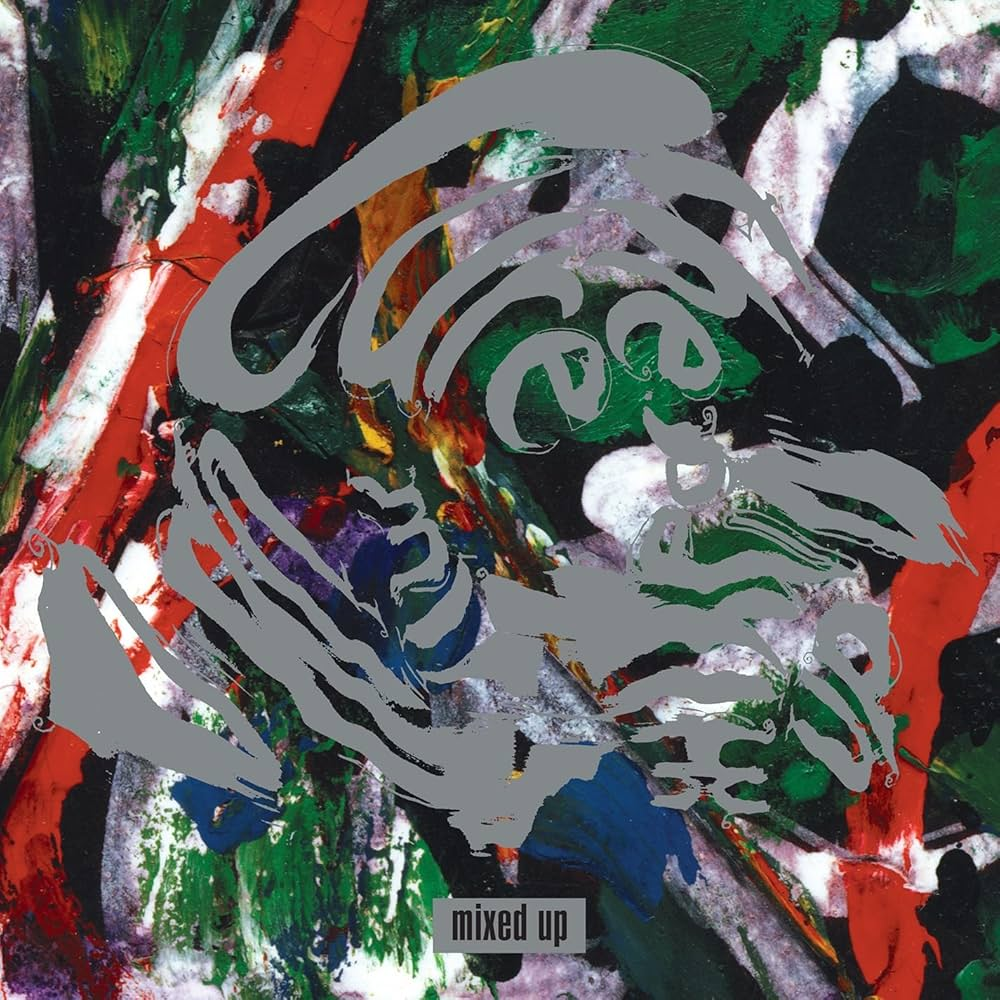
Quinta coletânea, composta inteiramente por remixes dos principais singles. Foco mais dançante e experimental, mostrando outra faceta do som do The Cure.
1993 - Lost Wishes
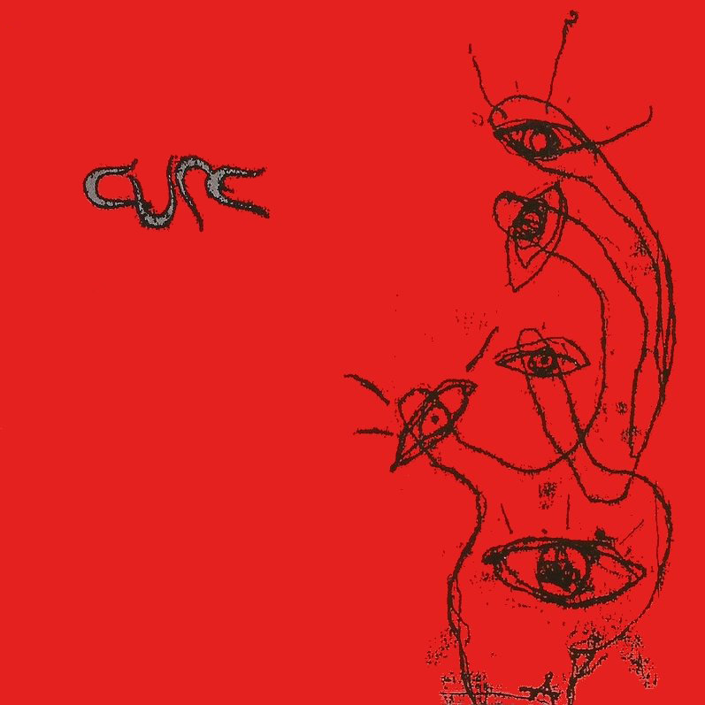
Sexta coletânea (mais um EP raro), traz quatro faixas instrumentais gravadas nas sessões do álbum Wish. Lançado apenas em cassete e por correio.
1997 - Galore
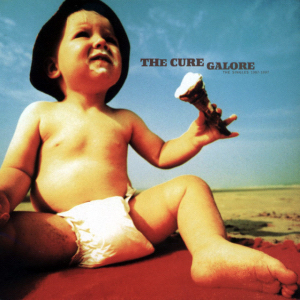
Sétima coletânea, é a sequência de Standing on a Beach, reunindo os singles da fase mais pop e madura da banda, entre 1987 e 1997.
2001 - Greatest Hits
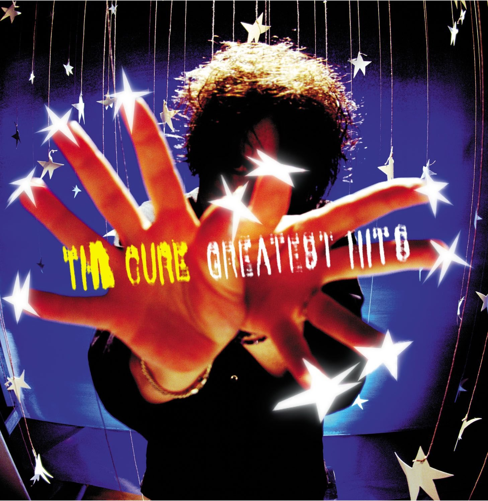
Oitava coletânea, reúne 18 dos maiores sucessos da banda, incluindo duas faixas inéditas. Perfeita como introdução ao som do The Cure.
2004 - Join The Dots
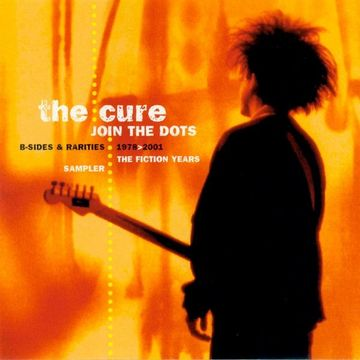
Nona coletânea (e a mais completa em raridades), é um box com 4 CDs reunindo todos os B-sides e faixas obscuras da era Fiction. Um verdadeiro presente para fãs.
SINGLES
1978 - Killing An Arab
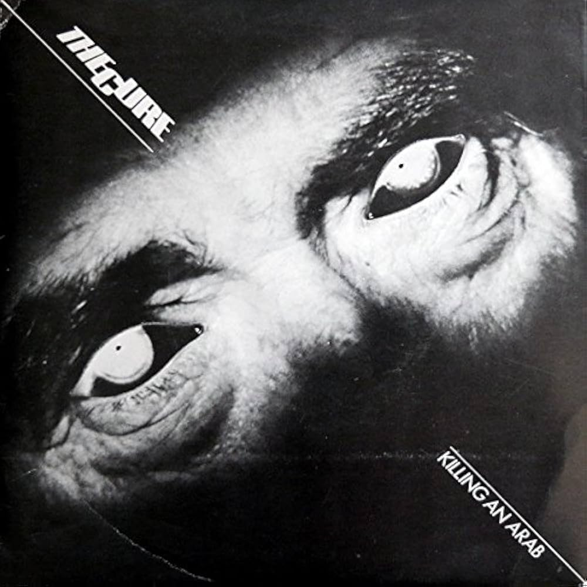
Lançada em 1978, é uma obra que mergulha em temas profundos de existencialismo e identidade. A letra é uma referência direta ao romance 'O Estrangeiro' ('L'Étranger'), do autor francês Albert Camus, publicado em 1942. A narrativa da canção espelha o momento do livro em que o protagonista, Meursault, se encontra na praia e acaba matando um árabe sem um motivo claro, um ato que desencadeia uma série de reflexões sobre a vida e a indiferença do universo.
1979 - Boys Don't Cry
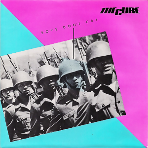
Um clássico do pós-punk dos anos 80 que aborda temas de arrependimento, perda e as pressões sociais sobre a expressão emocional masculina. A letra, escrita pelo vocalista Robert Smith, revela a história de um homem que está lidando com o fim de um relacionamento e o seu próprio orgulho e incapacidade de expressar adequadamente seus sentimentos.
1979 - Jumping Someone Else's Train
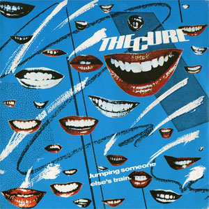
Lançada em 1979, é uma crítica ao conformismo e à perda de individualidade. A letra sugere que as pessoas frequentemente seguem tendências sem questionar, apenas para se encaixar em um padrão social.
1980 - 10:15 Saturday Night
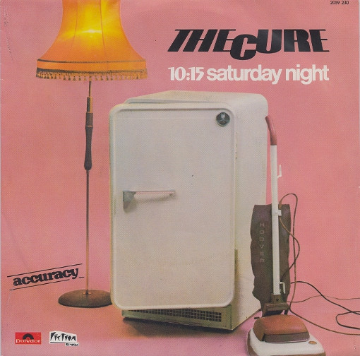
É uma expressão melancólica da solidão e da espera. A letra descreve uma cena aparentemente trivial, mas carregada de emoção: o protagonista está sentado na pia da cozinha, sob a luz fraca, enquanto a torneira goteja incessantemente. Este cenário cria uma atmosfera de desolação e tédio, ampliada pelo som repetitivo da água caindo.
1980 - A Forest
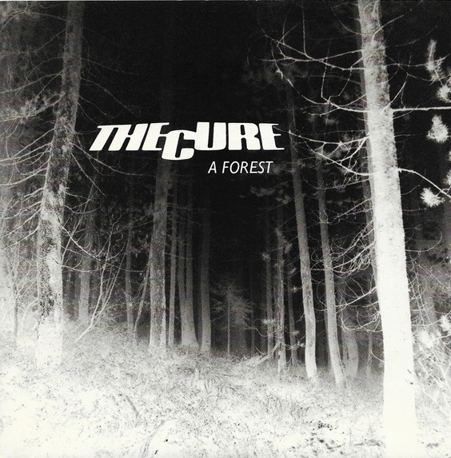
A canção é uma das mais emblemáticas da banda e reflete o estilo pós-punk e new wave que os caracterizava na época. A letra da música convida o ouvinte a mergulhar em uma narrativa misteriosa, onde a busca incessante por uma garota em uma floresta serve como metáfora para temas mais profundos.
1981 - Primary
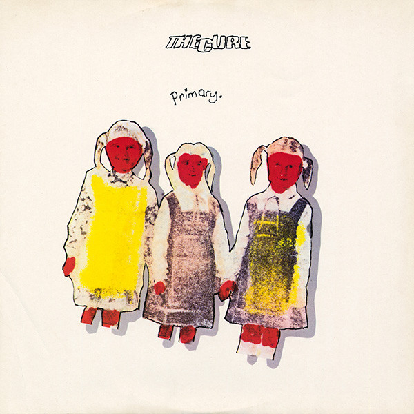
A música é uma reflexão profunda sobre a passagem do tempo, a perda da inocência e as mudanças inevitáveis que ocorrem ao longo da vida. A letra começa com uma imagem de crianças dormindo, vestidas de branco, simbolizando pureza e inocência.
1981 - Charlotte Sometimes
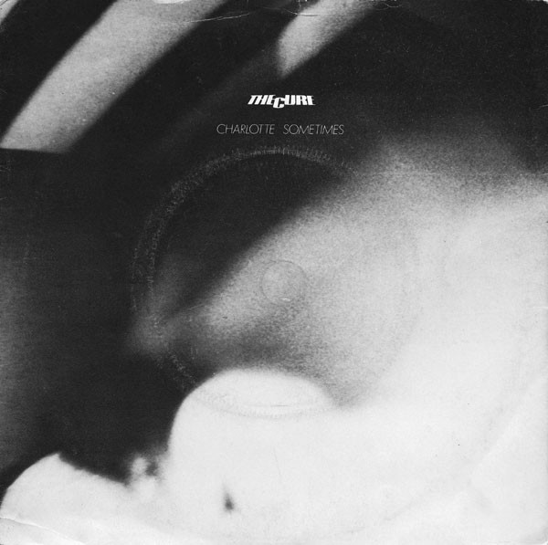
É uma obra envolta em melancolia e introspecção, características marcantes do estilo pós-punk e gótico do grupo. A letra narra a história de Charlotte, uma figura que parece estar perdida em seus pensamentos e sonhos, enfrentando a solidão e a estranheza do mundo ao seu redor.
1982 - The Hanging Garden
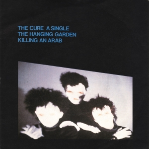
Uma obra rica em metáforas e imagens poéticas que evocam um senso de mistério e introspecção. A letra começa com a imagem de 'criaturas se beijando na chuva', sugerindo uma conexão íntima e quase primitiva entre os seres, que se tornam 'sem forma no escuro'.
1982 - Let's Go To Bed
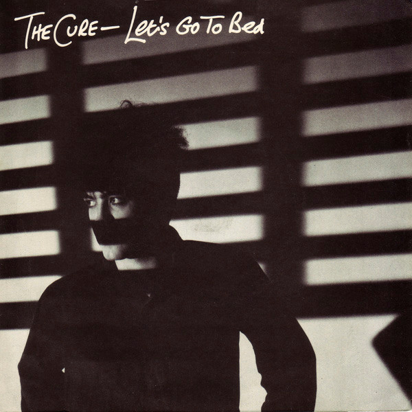
É uma faixa que se destaca pela sua sonoridade pós-punk e letras que refletem sobre a apatia e o desapego emocional. Lançada em 1982, a canção marca uma mudança no estilo da banda, introduzindo elementos mais pop em contraste com os tons sombrios de seus trabalhos anteriores.
1983 - The Walk
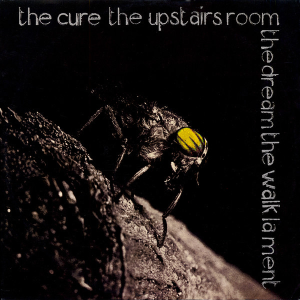
A música mergulha em uma narrativa intensamente emocional e simbólica. A letra começa com o eu lírico chamando alguém após a meia-noite e correndo até se sentir exausto, o que pode simbolizar uma busca desesperada por conexão ou reconciliação.
1983 - The Lovecats
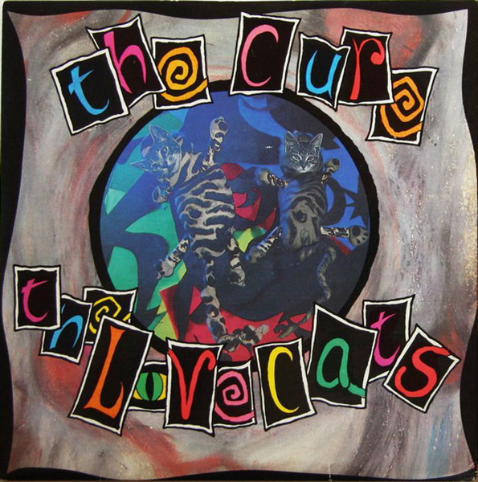
É uma celebração excêntrica e animada do amor e da paixão, com uma metáfora felina que percorre toda a letra. A canção começa com uma descrição de dois amantes que se movem com a agilidade e a graça de tigres enjaulados, sugerindo uma energia contida que está pronta para ser liberada
1984 - The Caterpillar
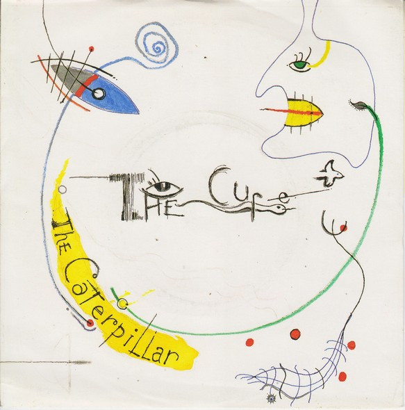
É uma obra que combina elementos líricos poéticos com uma sonoridade distintamente pós-punk e new wave. A letra da música parece explorar temas de transformação e a efemeridade das relações, utilizando a metáfora de uma lagarta que se transforma em borboleta.
1985 - In Between Days
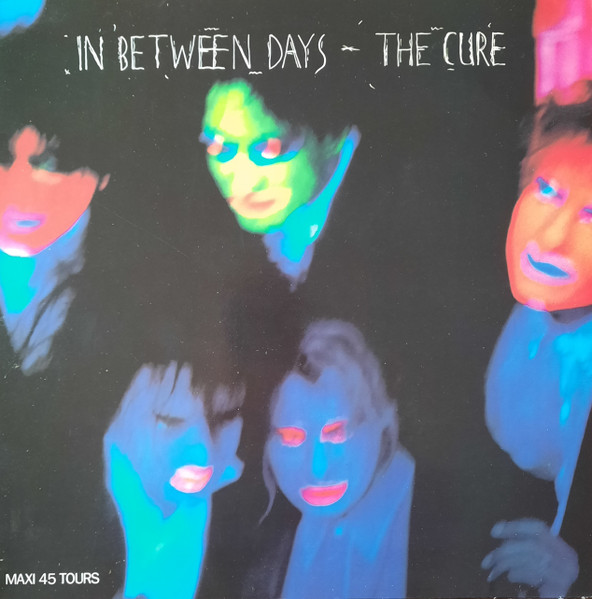
A música é uma expressão melódica da melancolia e do desespero que acompanham a perda e o arrependimento no amor. Lançada em 1985, a canção é caracterizada por sua sonoridade pós-punk e new wave, com um ritmo cativante que contrasta com a tristeza de suas letras.
1985 - Close To Me
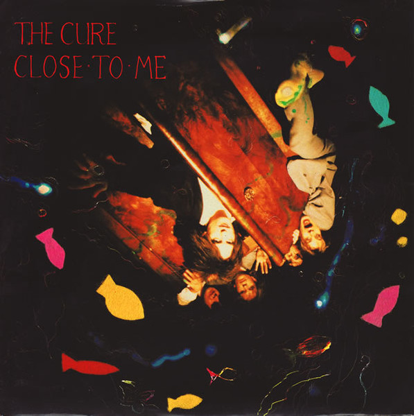
É uma composição que mistura sentimentos de ansiedade, antecipação e uma certa dose de surrealismo. A canção se destaca pelo seu ritmo cativante e pela voz marcante de Robert Smith, líder e vocalista da banda. A letra reflete uma luta interna, uma espera angustiante que parece ter mais a ver com sentimentos internos do que com eventos externos.
1987 - Why Can't I Be You?
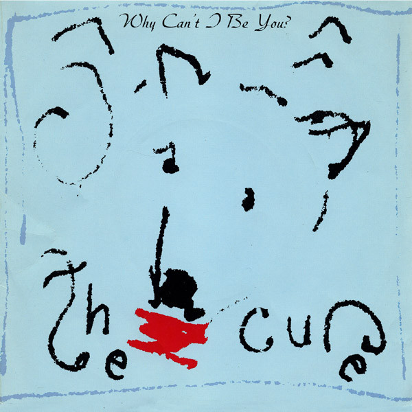
É uma expressão vibrante de admiração e desejo, embalada pelo som característico da banda que mistura elementos do post-punk e do new wave. A letra, repleta de exclamações e interjeições, transmite uma intensidade emocional que é típica do estilo lírico do vocalista e principal compositor, Robert Smith.
1987 - Catch
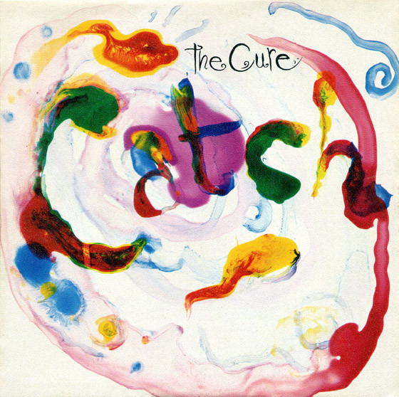
"Catch" do The Cure é uma música que aborda a nostalgia e a idealização de um amor passado, descrita como uma garota que o narrador conheceu e que permanece um enigma em sua memória.
1987 - Just Like Heaven
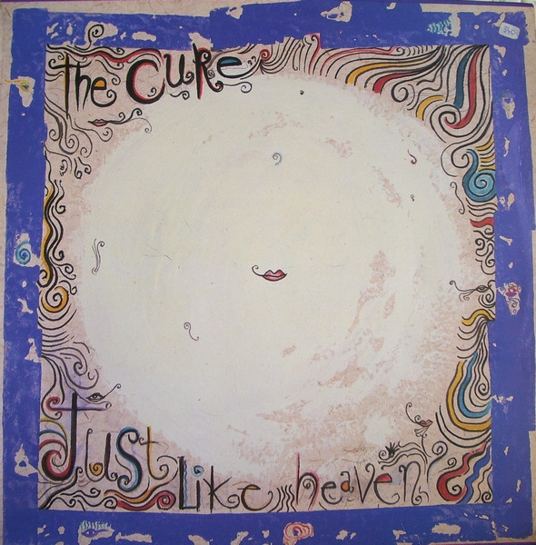
É uma das mais emblemáticas do grupo e do cenário do rock alternativo dos anos 80. A letra da canção, escrita pelo vocalista Robert Smith, é uma mistura de sentimentos intensos e imagens poéticas que capturam a essência do amor juvenil e a dor da perda.
1988 - Hot Hot Hot!!!
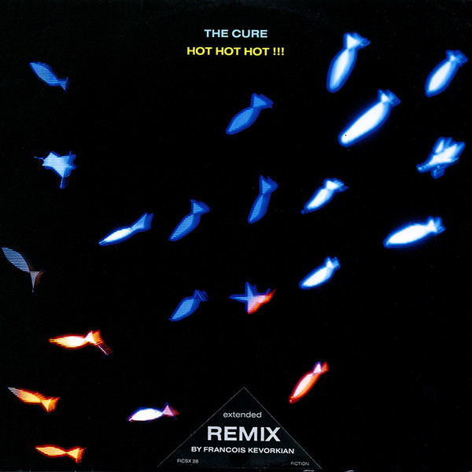
A música "Hot Hot Hot!!!"" da banda The Cure é uma explosão de energia e emoção, capturando a intensidade de momentos de choque e transformação. A letra descreve três encontros distintos com relâmpagos, cada um trazendo uma experiência visceral e transformadora.
1989 - Lullaby
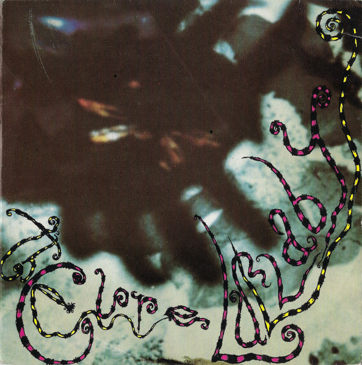
A música "Lullaby", da banda britânica The Cure, é uma composição que mistura elementos de horror com uma melodia que, paradoxalmente, remete a uma canção de ninar. A letra, escrita pelo vocalista Robert Smith, é conhecida por sua atmosfera sombria e suas imagens perturbadoras, que podem ser interpretadas de diversas maneiras.
1989 - Fascination Street
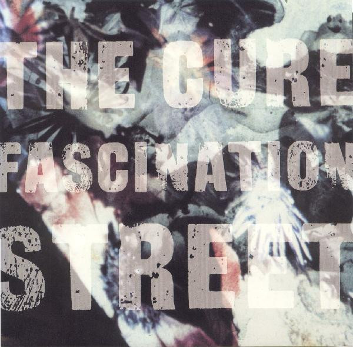
A música "Fascination Street" da banda The Cure, liderada pelo icônico Robert Smith, é uma viagem sombria e envolvente pelo desejo de escapismo e pela intensidade das experiências noturnas.
1989 - Lovesong
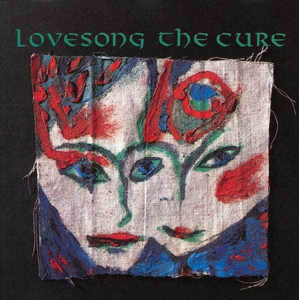
"Lovesong" (às vezes escrita como "Love Song") é uma canção da banda de rock inglesa The Cure, lançada como terceiro single de seu oitavo álbum de estúdio, Disintegration(1989), em 21 de agosto de 1989. A canção obteve considerável sucesso nos Estados Unidos, onde alcançou a segunda posição em outubro de 1989 e se tornou a única entrada da banda no top 10 da Billboard Hot 100. No Reino Unido, o single alcançou a 18ª posição e atingiu o pico no top 20 no Canadá e na Irlanda.
1990 - Pictures Of You
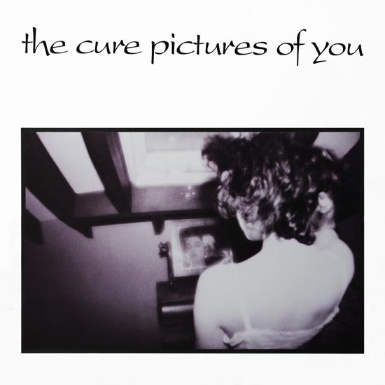
A música é uma viagem emocional através da saudade e da memória. A letra, escrita pelo vocalista Robert Smith, é uma expressão poética da dor e do luto que acompanham a perda de um ente querido. As imagens que ele descreve são carregadas de emoção e simbolismo, retratando a tentativa de manter viva a presença de alguém que já não está mais presente fisicamente.
1990 - Never Enough
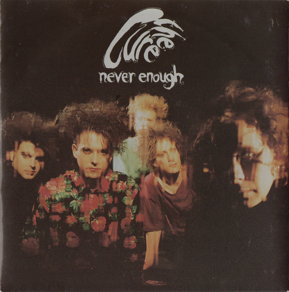
A música aborda a constante insatisfação e a sensação de que, independentemente do esforço, nada é suficiente. A repetição da frase 'It's never enough' ao longo da canção enfatiza a frustração e o desespero do eu lírico em sua busca por realização e contentamento. Essa repetição cria um efeito hipnótico, refletindo a natureza cíclica e interminável dessa busca.
1992 - High
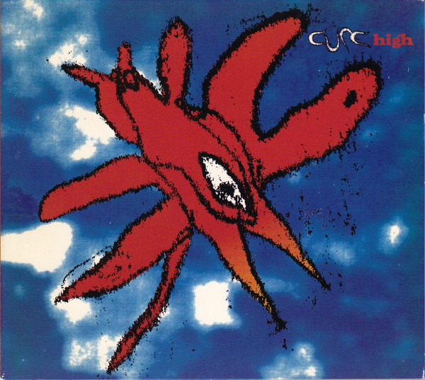
A música é uma expressão lírica do amor e admiração profundos que o vocalista, Robert Smith, sente por alguém especial. Através de metáforas e comparações poéticas, a letra descreve a sensação de estar apaixonado e a incapacidade de alcançar o estado eufórico que a pessoa amada parece habitar naturalmente.
1992 - Friday I'm in Love
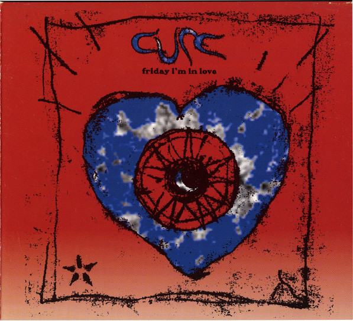
A música é uma celebração efervescente do amor e da alegria que parece florescer ao final da semana de trabalho. A letra da música faz um jogo com os dias da semana, atribuindo sentimentos negativos de segunda a quinta-feira, dias em que o narrador parece desinteressado e desanimado.
1992 - A Letter To Elise
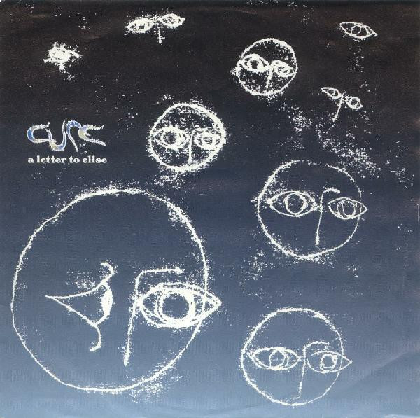
A música liderada pelo icônico Robert Smith, é uma balada melancólica que explora temas de despedida, desilusão amorosa e a dificuldade de deixar o passado para trás. A letra é apresentada como uma carta, possivelmente não enviada, para uma mulher chamada Elise, na qual o narrador expressa seus sentimentos de frustração e resignação em relação ao fim de um relacionamento.
1994 - Burn
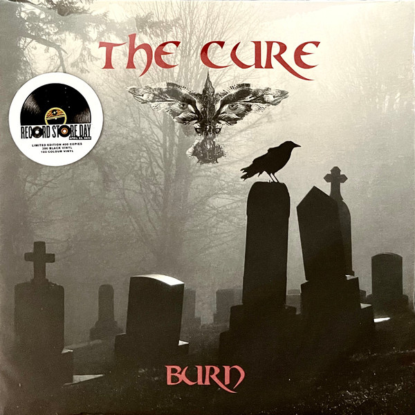
A música é uma expressão intensa de desejo e perda, imersa em uma atmosfera sombria e melancólica, características marcantes do estilo gótico e post-punk do grupo. A letra fala de uma obsessão que consome o eu lírico, uma chama que arde todas as noites, simbolizando a dor e o anseio por alguém que parece estar fora de alcance. A repetição do verso 'Every night I burn' reforça a ideia de um sofrimento contínuo e inescapável.
1996 - The 13th
A música é uma exploração intensa e quase surreal de sedução, desejo e a perda de controle. A letra começa com uma descrição vívida de uma mulher que domina a sala com sua presença e performance. A repetição de 'a-buzz a-buzz a-buzzing like them killer bees' sugere uma energia elétrica e quase perigosa, criando uma atmosfera de excitação e antecipação. O narrador está claramente encantado e ao mesmo tempo confuso com a intensidade da situação, pedindo para que aquilo não seja real.
1996 - Mint Car
A música liderada por Robert Smith, é uma expressão vibrante de felicidade e contentamento. Diferente de muitas outras canções do grupo, conhecido por seus temas melancólicos, "Mint Car" se destaca como um hino de alegria e satisfação plena. A letra da música transmite uma sensação de euforia e gratidão, onde o vocalista celebra um momento perfeito ao lado de uma pessoa especial, possivelmente um amor ou um amigo querido.
1996 - Gone!
A música expressa a necessidade de seguir em frente, de abandonar o passado e abraçar o futuro, mesmo que isso signifique deixar para trás coisas importantes ou pessoas, ela explora a ideia de partida, perda e transformação. A repetição da palavra "gone" enfatiza a ideia de ausência e mudança.
1996 - Strange Attraction
A música explora a complexidade e a imprevisibilidade das relações humanas, especialmente aquelas que começam de maneira inesperada e se desenvolvem de formas surpreendentes. A letra começa com uma dedicatória de aniversário, um gesto aparentemente simples que desencadeia uma série de eventos emocionais e correspondências entre duas pessoas.
1997 - Wrong Number
A música é uma exploração lírica de temas como desespero, desconexão e a luta interna com demônios pessoais. A repetição das cores 'lime green' (verde limão) e 'tangerine' (tangerina) ao longo da canção cria uma atmosfera de inquietação e desconforto. Essas cores são descritas como 'sickly sweet' (doce enjoativo), sugerindo algo que é ao mesmo tempo atraente e repulsivo, simbolizando as tentações e os perigos que o narrador enfrenta.
2000 - Out Of This World
A música é uma reflexão profunda sobre a transitoriedade da vida e a intensidade dos momentos que vivemos. A letra, escrita por Robert Smith, vocalista e principal compositor da banda, explora a ideia de como as experiências marcantes podem se tornar memórias nebulosas com o passar do tempo.
2001 - Cut Here
A música liderada por Robert Smith, é uma reflexão melancólica sobre arrependimento e a perda de oportunidades de se conectar com alguém importante. A letra começa com um encontro casual entre o narrador e um velho amigo ou amante, onde o cumprimento é marcado por uma formalidade que esconde emoções profundas.
2004 - The End of the World
A música conhecida por seu estilo pós-punk e letras introspectivas, explora temas de amor, desilusão e resignação. A letra revela uma conversa ou monólogo interno de alguém que está lidando com sentimentos de inadequação e a incapacidade de satisfazer completamente o parceiro. A repetição do verso 'I couldn't ever love you more' sugere um limite no amor que o narrador pode oferecer, apesar dos desejos do parceiro.
2004 - Taking Off
A música explora a dualidade entre a rotina diária e os momentos de euforia e conexão intensa. A letra começa com a promessa de recomeçar no dia seguinte, enfrentando as mesmas tarefas e desafios de sempre. O protagonista descreve um ciclo repetitivo de começar do zero, empurrar-se um pouco mais a cada dia e tentar superar as dificuldades cotidianas. Essa repetição sugere uma vida monótona e previsível, onde cada dia é uma cópia do anterior.
2004 - Alt.End
A música aborda o término de um relacionamento ou de uma fase da vida, com uma forte ênfase na aceitação do fim e na recusa de recomeçar. A letra começa com uma visão otimista do mundo, descrevendo-o como um lugar 'grande, brilhante e bonito', mas logo revela um sentimento de exaustão e finalização.
2008 - The Only One
A música é uma celebração intensa e apaixonada do amor e do desejo. A letra é repleta de metáforas sensuais e imagens vívidas que descrevem a profundidade da conexão emocional e física entre os amantes. A repetição de 'Oh I love' enfatiza a intensidade dos sentimentos do narrador, que se sente completamente envolvido e consumido pela pessoa amada.
2008 - Freakshow
A música é uma celebração intensa e irônica do desejo e da atração pelo incomum. A música mergulha em um universo onde o amor e a luxúria se misturam ao estranho e ao excêntrico. Com uma batida frenética e teatral, ela evoca a atmosfera de um espetáculo caótico e vibrante, onde os sentimentos são exagerados e os corpos se entregam à dança e à sedução.
2008 - Sleep When I'm Dead
A música é um hino à intensidade da vida, à urgência de viver plenamente antes que o tempo acabe. A música vibra com a energia de alguém que se recusa a desacelerar, que escolhe o excesso, a paixão e a liberdade ao invés da apatia ou da resignação. O título, repetido como um mantra, revela a filosofia do narrador: descansar é perda de tempo — há muito a sentir, a amar, a sofrer, a experimentar.
2008 - The Perfect Boy
A música explora a complexidade dos relacionamentos amorosos e a busca pelo parceiro ideal. A letra começa com uma declaração de amor absoluto, onde a personagem feminina acredita que 'nada mais é real' além do amor entre ela e seu parceiro. Essa visão romântica e idealizada do amor é contrastada com a percepção do personagem masculino, que vê o relacionamento de forma mais pragmática e menos exclusiva.